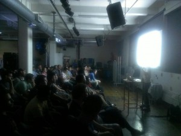

That time the lights went out at Etsy
I was preparing for my talk at Etsy’s Code as Craft series this past Tuesday. The room was starting to fill and we had about 10 minutes before I was to start. I took out my laptop and found, much to my dismay, that it wouldn’t work with the projector. For anyone who’s done any amount of speaking, this is one of the more common occurrences. Mike Brittain, who had set up the event, came over to see if he could do anything. As we fiddled with DisplayPort and VGA and HDMI, he apologized for the inconvenience. I told him not to worry, that this was not even close to the worst thing that’s happened to me as a speaker. If worse came to worse, I could always borrow someone else’s laptop since I only had a PowerPoint presentation.
Five minutes later, the power went out in the room. It sounded like a circuit breaker had flipped but no one really knew for sure. Since it was almost 7pm, the facilities folks were already off-premises, so we had no idea what was going on and whether or not it could be fixed. While some others ran around trying to figure out what had happened, Mike and I talked about what to do. We did, after all, have a room with over 100 people in it. We had food and beer and we had me (I was in New York just for this talk). We took inventory of what this would mean:
- No lights – not that big a deal yet.
- No microphone – rough because my voice was already strained.
- No air conditioning – for a humid 85 degree night in New York, that would be daunting.
- No projector – slides? What slides?
- No video – including no live streaming.
We talked about giving the presentation without any visuals, or giving it and using one of the whiteboards that was there for visuals. That, of course, would only last as long as it was light out. We eventually decided to start with a Q & A session and hope that we’d be able to figure out how to get the power back on. In essence, we were planning to reverse how a talk normally goes: we’d start with Q & A, then do the presentation, presumably with the power back on.
So that’s what we did. I gave a five-minute introduction about myself and what I do, then we went into questions. Any topic was fair game, and people asked some very interesting questions. What do you think of Angular? How do you actually scale a team of people working on the front-end? What other front-end scaling problems are there?
After about 15 minutes, some of the Etsy folks had determined the problem was isolated to the room we were in. Unfortunately, there wasn’t another room available that would hold everyone and be appropriate for a talk, so they ended up running a single extension cord from another room into the one we were in. That single extension cord was for one thing: the projector. At least with the projector, we’d have visuals and a source of light, addressing two of the big issues we were facing.
Next, we re-determined that my laptop wouldn’t work with the projector. However, there was a Macbook in the room that we could use. I loaded my presentation off of my flash drive (which I always have handy) onto the Macbook. Onlookers giggled as I fumbled my way through using a Mac (I do so rarely) and finally got to open the presentation in PowerPoint. Except that the version of PowerPoint on the Mac was a demo version that hadn’t been registered after the trial period, so it didn’t work. Someone suggested we open the presentation in Preview, so we tried that and the file was open.
I ended up using Preview to move through my presentation, even though some of the slides were pretty messed up, missing pieces, etc. I tried to fill in the blanks with description. And we were off, I gave the presentation I intended to. It would start to get stuffy in the room so windows were opened. That, unfortunately, made the sounds of the frequent trains passing by incredibly loud so I had to regularly pause and wait for them to pass before continuing. That was a mixed blessing as I was able to give my voice a bit of a break before continuing on without amplification.
I was amazed that almost everyone who was there stayed until the very end. Let no one say that a New York audience isn’t dedicated. Despite the rising temperature and stuffiness in the room that was getting pretty gross, and ultimately sitting in complete darkness with just the light of the projector, very few people left prior to the end of the presentation. We even had another Q & A after the presentation to finish up.
Despite everything that happened, I had a lot of fun and from talking with some of those in the audience, it seemed like the others did too. Strange things happen when you do enough public speaking and this was just a reminder that you really do need to be prepared for anything. I’m very proud of the event we all managed to cobble together last night.
Thanks to Mike and the rest of the Etsy folks for setting this up and for being flexible and creative in how to still put on a fun event despite the setbacks. I’ll look back on this talk fondly, especially as a way to remind new speakers that sometimes you just can’t assume anything, but that doesn’t mean something going wrong automatically causes failure.